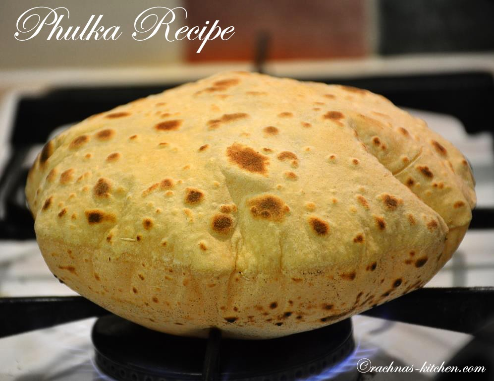
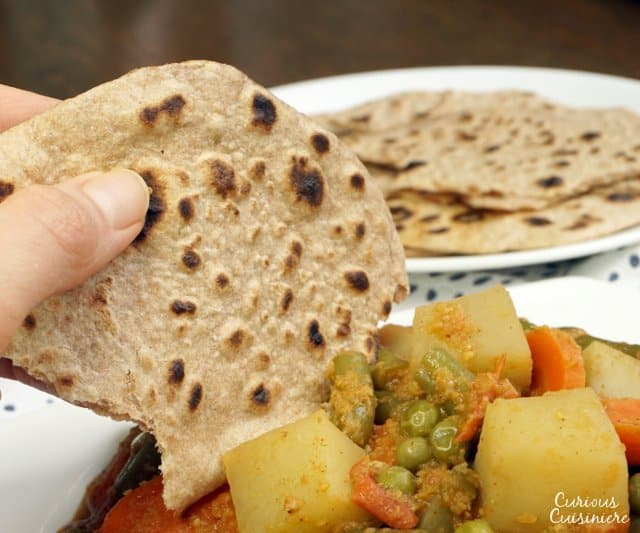
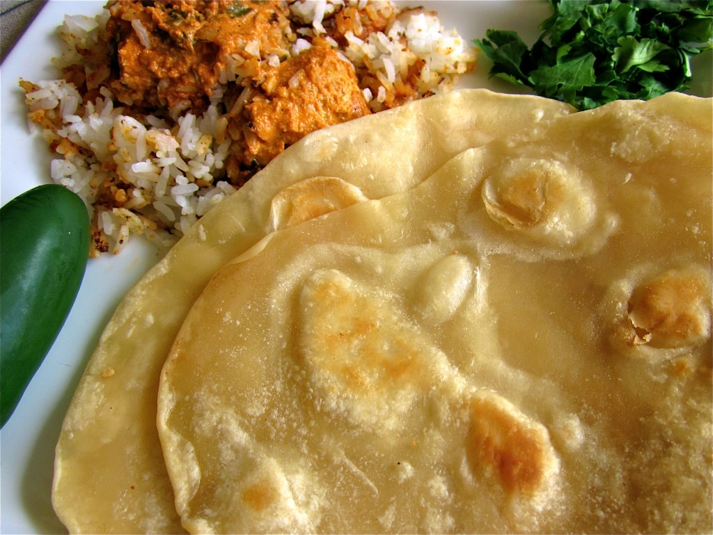
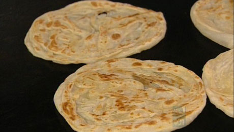
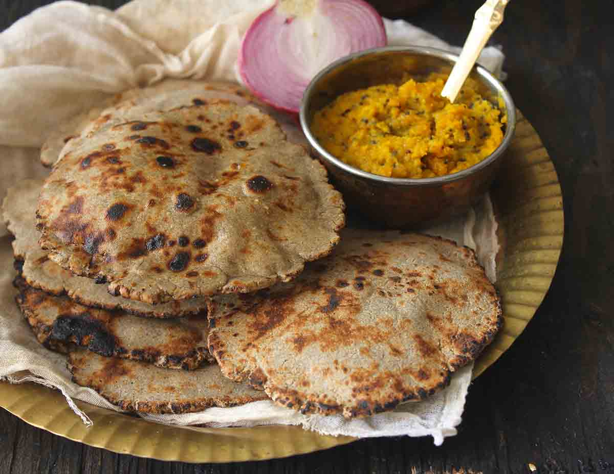

why roti recipe – This meal recipe strategies was add at 2019-05-09 by why roti recipe Download other meal recipe about meals in your why roti recipe strategies gallery including 20 diverse unique photo. Thanks for visiting why roti recipe for a meals with your meal recipe strategies collection for latest why roti recipe ideas. Select gallery to download why roti recipe in high resolution. Please contact us if it has a copyright. You possibly can download meal recipe strategies as part of your collection by clicking resolution image in Download by size. Be sure to rate and comment when you interest with this meal recipe.
Hot water rotis | Food24

Roti | Caribbean Recipes | GoodtoKnow
Phulka recipe | How to make Roti or Phulka (Video Recipe)

collection of 16 roti varieties, different types of roti recipes

Methi Roti Recipe – Methi Chapathi Recipe | Tickling Palates

Roti (Buttery Indian Flatbread) – The Food Charlatan
Masala Chapathi | Masala Roti |Masala Chapati recipe | Easy Indian …
The Ultimate Dhalpuri Recipe. | CaribbeanPot.com
☆ How to make Soft Chapati / Phulka / Roti | Chapati Recipe …
Roti Recipe or Phulka Recipe, How to make Soft Rotis | Phulkas

Soft Chapati, How to make easy chapati recipe
Chicken Curry And Roti Recipe – Genius Kitchen
Easy to make Roti Bread "Chapati" – Easy Meals with Video Recipes …
Rumali Roti Recipe by Archana's Kitchen
Roti (A Guide to Indian Flatbread) • Curious Cuisiniere

Roti (Buttery Indian Flatbread) – The Food Charlatan

Roti Chanai – Recipes – Poh's Kitchen

Bajri Ki Roti Recipe by Archana's Kitchen

Roti Recipe or Phulka Recipe, How to make Soft Rotis | Phulkas

How to Make Roti Canai | El Mundo Eats